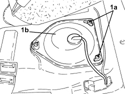
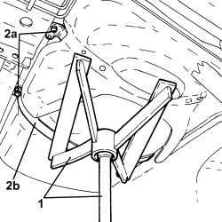

1040B56 REAR FUEL RETURN PIPE - R.R.
- Path
- Procedures > 10 ENGINE > 1040 FUEL TANK AND PIPES > 1040B FUEL SUPPLY/RETURN CIRCUIT PIPE > 1040B56 REAR FUEL RETURN PIPE - R.R.
- Kind
- repair procedure (removal / refitting; the operation number is the code)
- Applies to
- engines: 1.9 JTD 8v, 1.9 JTD 16v; all production periods
- Interactive page
- https://sloeber94.github.io/elrnDB-fCrm/en/#/194002161
Applies to: engines: 1.9 JTD 8v, 1.9 JTD 16v; all production periods
 Removing
Removing
 Refitting
RefittingOp. 7050A20 ONE-PIECE REAR SEAT CUSHION - R.R.
Op. 7050A33 REAR SEAT CUSHION SOUND DEADENING DEVICE/SPACER - R R
1. Undo the bolts (1a) and remove the access cover (1b) for the submerged pump assembly complete with level gauge.

Applies to: engines: 1.9 JTD 8v, 1.9 JTD 16v; all production periods
1. Disconnect the rear fuel return pipe, submerged pump side, complete with level gauge control.

Applies to: engines: 1.9 JTD 8v, 1.9 JTD 16v; all production periods
1. Position a hydraulic jack with a suitable tool for supporting the fuel tank.
2. Undo the bolts (2a) fixing the fuel tank support belts (2b).
- Lower the fuel as far as necessary to gain access to the clip securing the fuel return pipe to the body.

Applies to: engines: 1.9 JTD 8v, 1.9 JTD 16v; all production periods
1. Disconnect the rapid connector for the rear fuel supply pipe, front fuel return pipe side.
2. Remove the rear fuel return pipe (2a) after releasing from the fastenings (2b).

Applies to: engines: 1.9 JTD 8v, 1.9 JTD 16v; all production periods
Refitting
Removing- Refit the rear fuel return pipe in its seat and secure.
- Connect the rapid connector for the rear fuel return pipe, front fuel return pipe side.
- Secure the rear fuel return pipe with the fastening band located beneath the fuel tank.
- Place the fuel tank in position and secure it tightening the bolts to the recommended torque.
Component | Fastening | dia | Value (daNm) | Validity |
|---|---|---|---|---|
Fuel tank | Bolt | M8 | (bodyshell side) 3.2 - 3.9 |
- Remove the hydraulic jack with the suitable tool for supporting the fuel tank.
- Disconnect the rear fuel return pipe, submerged pump side, complete with level gauge control.
- Place the access cover to the submerged pump assembly complete with level gauge back in its housing and secure it using the bolts.
Op. 7050A33 REAR SEAT CUSHION SOUND DEADENING DEVICE/SPACER - R R
Op. 7050A20 ONE-PIECE REAR SEAT CUSHION - R.R.
- Remove the vehicle from the lift.